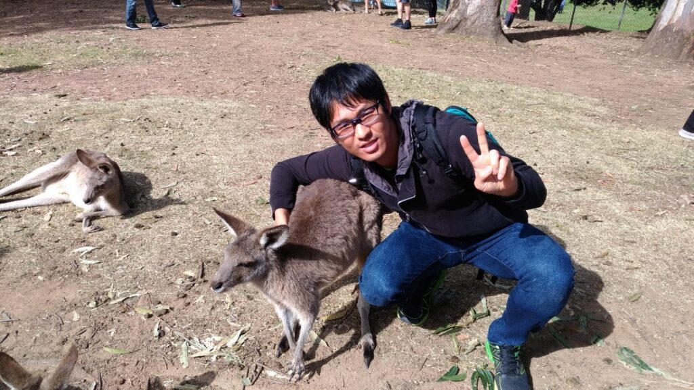

ごあいさつ
こんにちは、寄田明宏です。現在、第一工科大学で研究をしています。
また、ソフトボール部で副顧問をしています。
趣味
- 野球・ソフトボール・パワプロ
- ギター
- カラオケ
これまでの経歴
- 埼玉大学工学部機械工学科 卒業
- 首都大学東京大学院システムデザイン研究科 修士課程修了
- La Trobe大学 博士後期課程修了
博士論文タイトル「Chatbots and Robots: A Framework for Assessing Stressors and Formulating Peer Support for the Self-management of Occupational Stress 」
職歴
- 株式会社日立情報通信エンジニアリング システムエンジニア
- 東京都立大学システムデザイン学部 リサーチアシスタント
- 関西学院大学工学部知能・機械工学課程 契約助手
- 東京都立大学システムデザイン学部 客員研究員
資格
- CCNA
- 応用情報処理技術者
質問
①座右の銘や好きな言葉は？
②人生に影響を与えた本や映画、人物は？
③小さい頃の夢は？
プロ野球選手
④今の夢は？
探し中